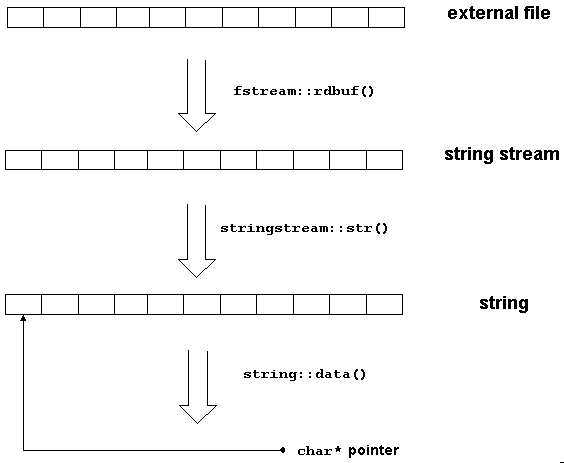

The previous section showed how you can read the content of a file in its entirety by using the rdbuf() member function. Let us now explore a variation of that example. Imagine another file containing some sort of header information that needs to be analyzed before we start appending the file. Instead of writing the current file content to the standard output stream, we want to process the content before we start adding to it. The easiest way to put the entire file content into a memory location for further processing is by creating a string stream and inserting the file's stream buffer into the string stream:
std::fstream fil("/tmp/inout");
std::stringstream header_stream; //1
header_stream << fil.rdbuf(); //2
// process the header, for example
std::string word;
header_stream >> word; //3
| //1 | The easiest way to put the entire file content into a memory location for further processing is by creating a string stream, and |
| //2 | Inserting the file's stream buffer into the string stream. |
| //3 | We now have the usual facilities of an input stream for reading and analyzing the header information; that is, operator>>(), read(), get(), and so on. |
In cases where this procedure is insufficient, you should create a string that contains the header information and process the header by means of the string operations find(), compare(), etc.
std::fstream fil("/tmp/inout");
header_stream << fil.rdbuf();
std::string header_string = header_stream.str();
// process the header, for example
std::string::size_type pos = header_string.rfind('.');
If the header contains binary data instead of text, even a string will probably not suffice. Here you would want to see the header as a plain byte sequence, that is, an ordinary char* buffer. But note that a code conversion might already have been performed, depending on the locale attached to the file stream. In cases where you want to process binary data, you must ensure that the attached locale has a non-converting code conversion facet:
std::fstream fil("/tmp/inout");
header_stream << fil.rdbuf();
std::string header_string = header_stream.str();
const char* header_char_ptr = header_string.data();
// process the header, for example
int idx;
std::memcpy((char*) &idx,header_char_ptr,sizeof(int));
A note on efficiency: if the header information is extensive, you must consider the number of copy operations performed in the previous example. Figure 34 shows how these copies are made:

The content of the file is copied into the string stream's buffer when the pointer obtained through rdbuf() is inserted to the string stream. A second copy is created when the string stream's function str() is called. The call to the string's function data() does not create yet another copy, but returns a pointer to the string's internal data.